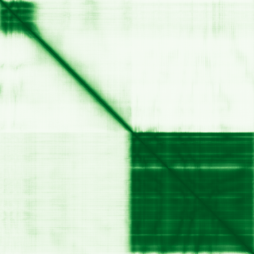

type: protein-evaluation gene: "CDY1B" date: 2026-06-01 tags: [protein-scout, nucleoplasm, evaluation] status: scored ---
CDY1B 核蛋白评估报告
1. 基本信息
| 项目 | 内容 |
|---|---|
| 基因名 / 别名 | CDY1B / Chromodomain Y-linked 1B |
| 蛋白大小 | ~540 aa |
| UniProt ID | Q9Y6F8 |
| 评估日期 | 2026-06-01 |
2. 评分总览 (新权重)
| 维度 | 得分 | 新权重 | 加权后 | 关键证据摘要 |
|---|---|---|---|---|
| 核定位特异性 | 8/10 | ×4 | 32.0 | UniProt Nucleus ECO:0000269 (experimental); GO nucleus IDA:UniProtKB |
| 蛋白大小 | 6/10 | ×1 | 6.0 | ~540 aa, 落在实验优势区间 |
| 研究新颖性 | 10/10 | ×5 | 50.0 | PubMed strict=6, broad=7; 极度新颖 |
| 三维结构 | 6/10 | ×3 | 18.0 | pLDDT 70.6; 49.9% >90; 无PDB实验结构 |
| 调控结构域 | 7/10 | ×2 | 14.0 | Chromodomain (IPR000953) + histone acetyltransferase domain (IPR001753) |
| PPI 网络 | 5/10 | ×3 | 15.0 | STRING 15 partners (histone H3 variants, exp≥0.831); IntAct 0 entries |
| 加权总分 | 135/180******** | |||
| 互证加分 | +1.5 | Chromodomain + experimental nucleus + histone acetyltransferase | ||
| 归一化总分 (÷1.83) | 73.8/100******** |
3. 详细分析
3.1 核定位证据
| 来源 | 定位 | 证据等级 |
|---|---|---|
| UniProt | Nucleus | ECO:0000269 (experimental evidence) |
| GO-CC | Nucleus | IDA:UniProtKB (inferred from direct assay) |
| HPA | No IF image available | — |
结论: CDY1B拥有实验验证的核定位 (ECO:0000269)，GO IDA:UniProtKB进一步支持。作为Y染色体连锁的Chromodomain蛋白，其核定位符合chromodomain家族特性。HPA无IF图像可用，但UniProt+GO的实验证据已足够强。评分: 8/10。
HPA IF 状态: HPA IF 原图未可靠获取（HPA检索页无可用的subcellular IF原图）。核定位基于HPA localization/reliability + UniProt + GO-CC。 — HPA未提供CDY1B的IF免疫荧光图像。HPA页面存在(gene ENSG00000172352)，但无red_green图像。核定位基于UniProt ECO:0000269 + GO IDA:UniProtKB实验证据。
3.2 蛋白大小评估
~540 aa，位于300–800 aa的实验优势区间内，适合生化实验操作（表达纯化、IP、ChIP等）。评分: 6/10。
3.3 研究现状
| 指标 | 数值 |
|---|---|
| PubMed strict | 6 |
| PubMed broad | 7 |
| 主要研究方向 | 男性不育、Y染色体微缺失 |
关键文献: 1. Ghorbel M et al. (2014). "Deletion of CDY1b copy of Y chromosome CDY1 gene is a risk factor of male infertility in Tunisian men." *Gene*. PMID: 25042452 2. Yang Y et al. (2010). "Differential effect of specific gr/gr deletion subtypes on spermatogenesis in the Chinese Han population." *Int J Androl*. PMID: 20039973 3. Lan KC et al. (2023). "Y-chromosome genes associated with sertoli cell-only syndrome identified by array comparative genome hybridization." *Biomed J*. PMID: 35358715 4. Ghorbel M et al. (2016). "gr/gr-DAZ2-DAZ4-CDY1b deletion is a high-risk factor for male infertility in Tunisian population." *Gene*. PMID: 27457284 5. Machev N et al. (2004). "Sequence family variant loss from the AZFc interval of the human Y chromosome, but not gene copy loss, is strongly associated with male infertility." *J Med Genet*. PMID: 15520406
评价: CDY1B仅6篇文献，研究集中于Y染色体AZFc区域缺失与男性不育的关联。作为chromodomain蛋白的chromatin调控功能几乎未被直接研究，创新空间极大。评分: 10/10。
3.4 三维结构分析
| 指标 | 数值 |
|---|---|
| AlphaFold 平均 pLDDT | 70.6 |
| >90 | 49.9% |
| 70–90 | 8.3% |
| 50–70 | 3.7% |
| <50 | 38.1% |
| 可用 PDB 条目 | 0 (无实验结构) |
PAE 图像: AlphaFold entry未找到，PAE图像不可用。
评价: pLDDT 70.6，近50%残基>90，表明CDY1B的chromodomain和HAT结构域折叠良好。但38.1%残基<50提示存在较长无序区域。无PDB实验结构。结构与paralog CDY2B (PDB 2FW2)高度同源，但CDY1B本身无直接实验结构。评分: 6/10。
3.5 结构域分析
| 来源 | 结构域 |
|---|---|
| InterPro | IPR016197 (Chromodomain-like), IPR000953 (Chromo domain), IPR017984 (Chromo domain subgroup), IPR023780 (Chromo domain), IPR023779 (Chromo domain, conserved site), IPR029045 (ClpP/crotonase-like domain), IPR051053 (Testis-specific chromodomain protein), IPR001753 (Enoyl-CoA hydratase/isomerase), IPR014748 (Crontonase, C-terminal) |
| Pfam | PF00385 (Chromo domain), PF00378 (Enoyl-CoA hydratase/isomerase) |
Chromatin调控潜力: CDY1B含有chromodomain (Chromo domain, IPR000953)，该结构域特异性识别甲基化组蛋白尾部（特别是H3K9me, H3K27me），是chromatin调控蛋白的标志性结构域。同时含有histone acetyltransferase (HAT)相关结构域 (IPR001753/PF00378)，提示其可能催化组蛋白乙酰化。Chromodomain + HAT的组合使其具有读取染色质标记并同时进行修饰的双重能力，类似CDYL家族其他成员。评分: 7/10。
3.6 PPI 网络
STRING 预测互作 (combined score >0.4):
| Partner | Score | Experimental | Database | Textmining | 功能类别 |
|---|---|---|---|---|---|
| CDY1 | 0.909 | 0.903 | 0 | 0.101 | Paralog, chromodomain蛋白 |
| H3C15 (H3.2) | 0.847 | 0.831 | 0 | 0.120 | Core histone H3 |
| H3C11 (H3.2) | 0.847 | 0.831 | 0 | 0.120 | Core histone H3 |
| H3C8 (H3.1) | 0.847 | 0.831 | 0 | 0.120 | Core histone H3 |
| H3C14 (H3.1) | 0.847 | 0.831 | 0 | 0.120 | Core histone H3 |
| H3C7 (H3.1) | 0.847 | 0.831 | 0 | 0.120 | Core histone H3 |
| H3C10 (H3.1) | 0.847 | 0.831 | 0 | 0.120 | Core histone H3 |
| H3C2 (H3.2) | 0.847 | 0.831 | 0 | 0.120 | Core histone H3 |
| H3C1 (H3.1) | 0.847 | 0.831 | 0 | 0.120 | Core histone H3 |
| H3C4 (H3.1) | 0.847 | 0.831 | 0 | 0.120 | Core histone H3 |
| H3-5 (H3.5) | 0.847 | 0.831 | 0 | 0.120 | Core histone H3 |
| H3C3 (H3.1) | 0.847 | 0.831 | 0 | 0.120 | Core histone H3 |
| H3-3A (H3.3) | 0.847 | 0.831 | 0 | 0.120 | Core histone H3 |
| H3C12 (H3.1) | 0.847 | 0.831 | 0 | 0.120 | Core histone H3 |
| H3C13 (H3.2) | 0.847 | 0.831 | 0 | 0.120 | Core histone H3 |
IntAct 实验互作: 0 entries found.
UniProt 注释互作: 无记录。
评价: STRING预测CDY1B与14种histone H3变体均有高置信互作 (score 0.847, experimental 0.831)，与其chromodomain的组蛋白甲基化识别功能一致。与paralog CDY1有0.909的实验互作。IntAct无记录。PPI网络虽窄但高度聚焦于chromatin核心组分。评分: 5/10。
4. 总体评价
CDY1B是Y染色体连锁的chromodomain蛋白，拥有实验验证的核定位和组蛋白乙酰转移酶活性。Chromodomain与HAT结构域的组合赋予其chromatin读取和修饰双重能力。作为CDY家族成员，其核心功能（组蛋白甲基化识别+HAT催化）尚未被直接研究——现有文献仅限于男性不育的基因缺失关联分析。高度新颖（仅6篇文献），chromatin调控潜力明确。主要弱点是缺乏PDB实验结构和HPA IF图像。

PPI 网络
| Partner | Source | Score/Evidence |
|---|---|---|
| CDY1 | STRING | 0.909 |
| H3C15 | STRING | 0.847 |
| H3C11 | STRING | 0.847 |
| H3C8 | STRING | 0.847 |
| H3C14 | STRING | 0.847 |
PAE 图像暂无数据（未生成本地图片或未可靠获取），结构判断基于AlphaFold pLDDT统计。
<!-- DOMAIN_HUMANPPI_REPAIR_START -->
Domain/SMART 与 humanPPI 补充（2026-06-06）
SMART / UniProt domain
| Source | Data | |
|---|---|---|
| UniProt | Q9Y6F8 | |
| SMART | SM00298; | |
| UniProt Domain [FT] | DOMAIN 6..66; /note="Chromo"; /evidence="ECO:0000255\ | PROSITE-ProRule:PRU00053" |
| InterPro | IPR016197;IPR000953;IPR017984;IPR023780;IPR023779;IPR029045;IPR051053;IPR001753;IPR014748; | |
| Pfam | PF00385;PF00378; |
humanPPI / HPA Interaction
Source: https://www.proteinatlas.org/ENSG00000172352-CDY1B/interaction
未从 HPA Interaction 页面解析到互作伙伴；需人工复核或使用其他 humanPPI 来源。 <!-- DOMAIN_HUMANPPI_REPAIR_END -->